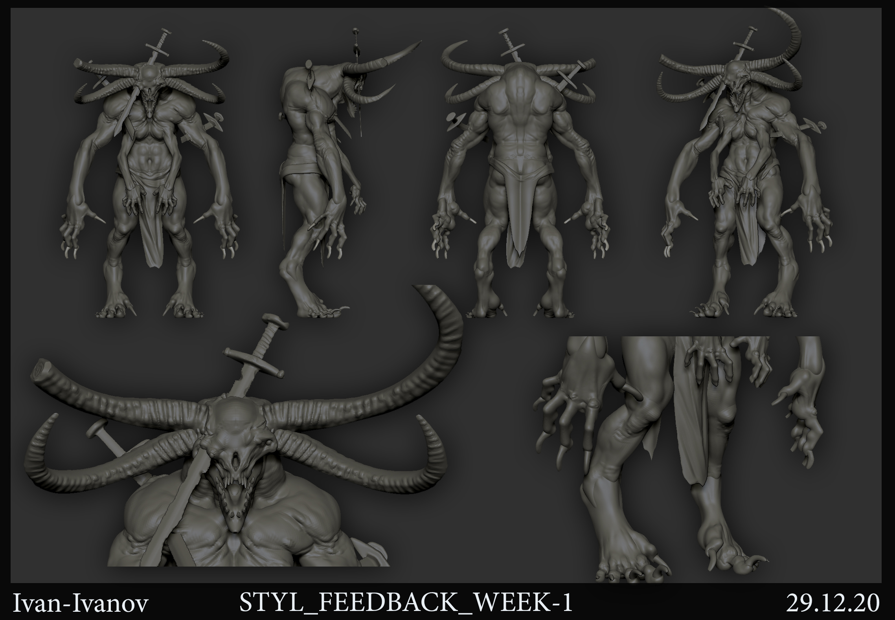
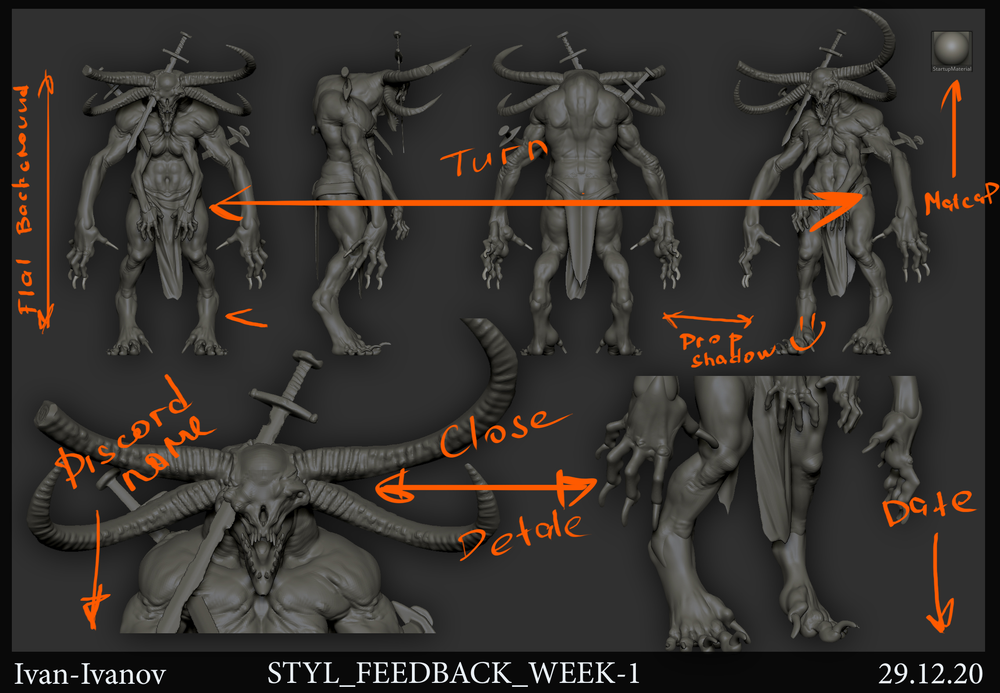

3. Домашняя работа
Если ты посмотрел обе лекции раздела, сделай супер простой блокаут первого рида, примерный дизайн:
1. 2D скриншоты, оформленные согласно примеру ниже. Там же ты найдешь matcap Николая


ZTL Бугая в вариантах с броней и без
Альтернативный вариант
ЧЕКЛИСТ:
1. Работа сделана до первого рида (не выше)
2. Органическая часть модели симметрична
3. Персонаж в А-Позе
4. Модель расположена по центру
5. Флоу выдержан максимально внутри всех элементов
6. Силуэт выразителен
7. Базовые анатомические связки разложены корректно согласно техникам показанным в лекции
8. Обвес сделан при помощи всех указканных на лекции методов, список ниже:
• Extract (обмотки, наплечники)
• Insert Primitive (шипы)
• Отделение частей (ноги)
• Добавление симметричной сферы